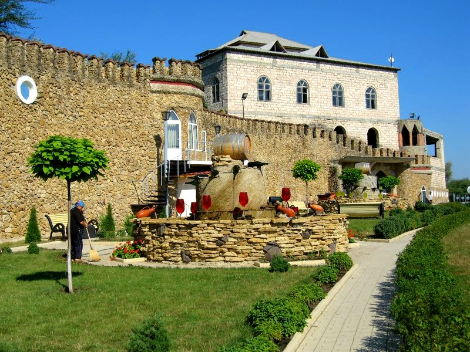
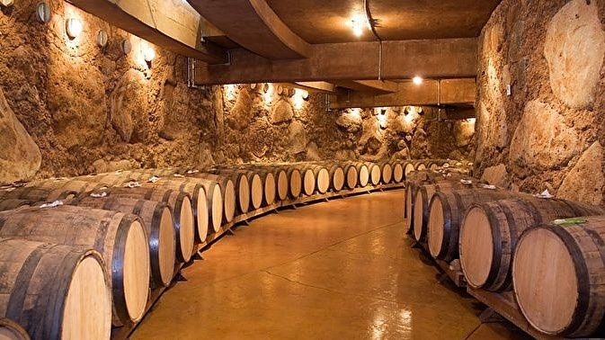
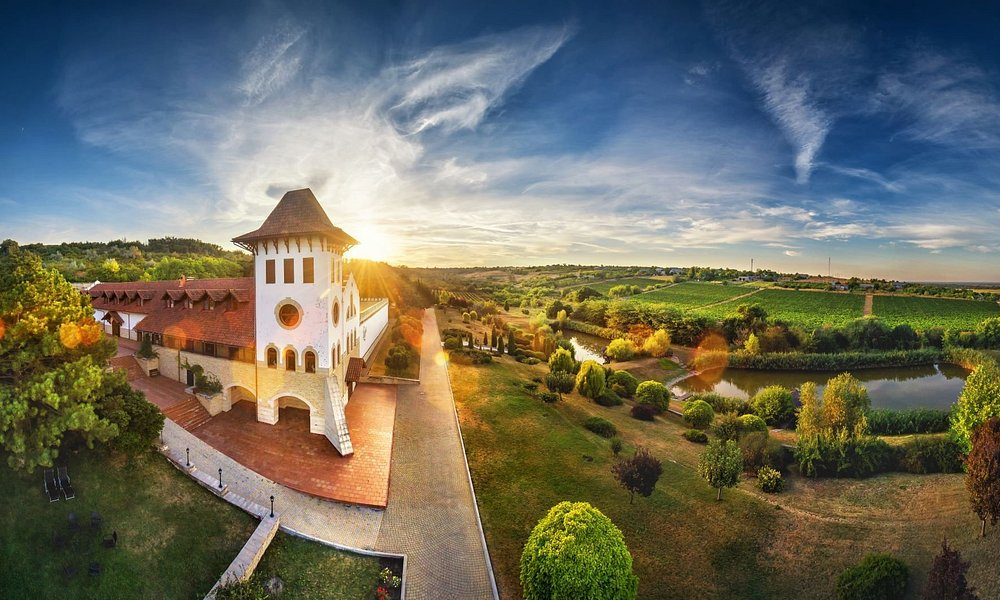
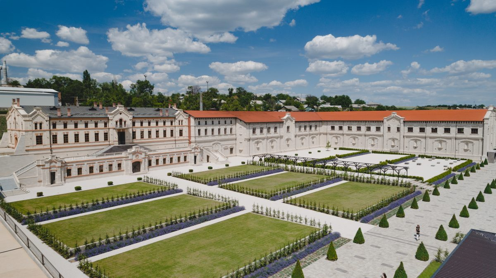

Top wineries you need to visit in Moldova
-
Milestii Mici
 SourceHome to the world's largest wine cellars, which ramble on for 200 kilometers (124 miles), Milestii Mici also holds the country's national collection of wine, around 2 million bottles. The same collection was registered in 2005 with the Guinness World Records as the largest in the world. Today, it's most valuable wine is worth 480 euros, but rest assured, Moldovans believe wine is for everyone. Plenty of bottles are priced very reasonably.
-
Cricova
 SourceThe wine cellars of Cricova are the second largest wine cellar in Moldova, after Milestii Mici. Cricova Winery is a real underground wine city with wide streets, warehouses, and tasting rooms. Though an over-the-top underground oddity, the site was made a visiting point for all official delegations to the USSR and, even after its collapse, still holds the collections of various political heavyweights. Angela Merkel, John Kerry, Joe Biden, and Petro Poroshenko all visited and were gifted private collection spaces. Vladimir Putin has an impressive assortment of wines here, and, according to Forbes, a gold-plated mini-car to take him through the tunnels. While no politician, the first man in space, Yuri Gagarin, is rumored to have gotten lost in the caves for hours (guides like to joke that it was easier for him to get into space than out of the wine cellar).
-
Purcari
 SourcePurcari is one of the oldest wineries in Moldova, receiving its first gold medal in 1878 for a wine they still make today. Having entered more than 30 markets worldwide, Purcari might be the most easily-found Moldovan wine abroad. Located within its own micro-climate and receiving warm winds off the Black Sea, Purcari grapes ripen gently during summer days of sunshine across its hills on the 260-hectares of vines. Try the Negru de Purcari, the wine that won gold so many years ago.
-
Mimi Castle
 SourceCastel Mimi is another massively important winery within Moldova, in part due to the stunning feats of architecture that the winery inhabits. Now restored, the winery preserves the collective memory of many through its tour which features snapshots of the winery's endurance through empires – namely Russian, Romanian and Soviet rule.